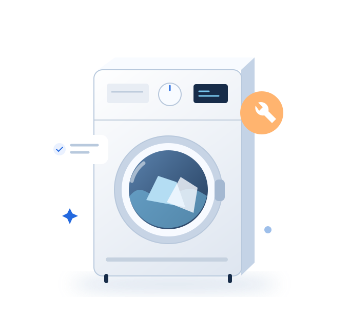

Опишите неисправность
Укажите модель и симптомы. Фото можно будет приложить в переписке.
Когда домашняя техника подводит
Стиральная машина не сливает воду? Посудомойка показывает ошибку? Опишите проблему, чтобы мастер мог подготовиться к разговору.
Описать поломкуСначала детали. Затем согласованное решение.

Выберите нужный вариант,
и он появится в заявке.
Диагностика, работы и запчасти согласуются отдельно.
Укажите модель и симптомы. Фото можно будет приложить в переписке.
Мастер согласует диагностику, формат обслуживания и время.
Стоимость работ и запчастей уточняется после диагностики, до ремонта.
Оставьте детали в одном сообщении. Мастер уточнит возможность ремонта, стоимость диагностики и удобное время.
Если есть фото шильдика или код ошибки, добавьте их вручную в WhatsApp после перехода.
По описанию можно обсудить предварительные условия. Окончательная стоимость зависит от диагностики, работ и запчастей. Ничего не оплачивается через эту форму.
Формат обслуживания нужно согласовать с мастером. В заявке укажите район и уточните, удобен ли вам выезд или приём в мастерской.
Опишите технику и проблему своими словами. После перехода в WhatsApp можно отправить фото наклейки с моделью.
Нет. Сообщение отправляете вы, а мастер отдельно подтверждает время и условия.